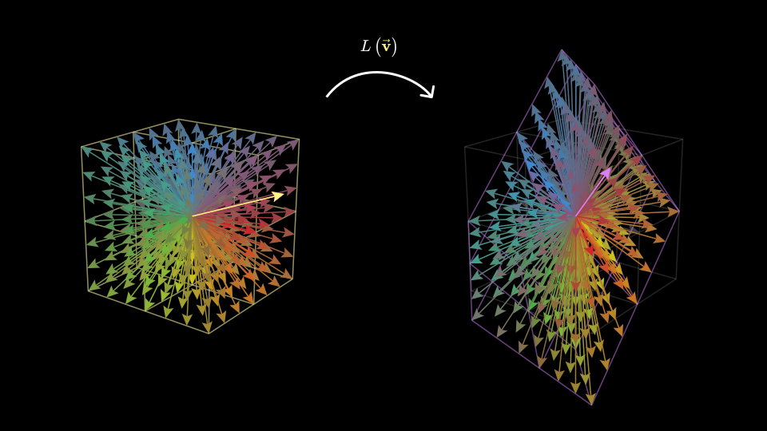
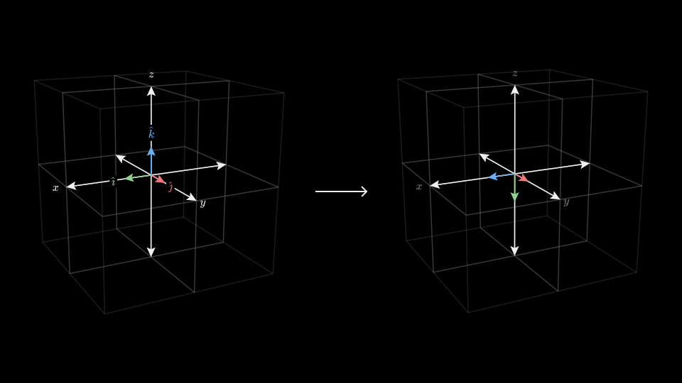
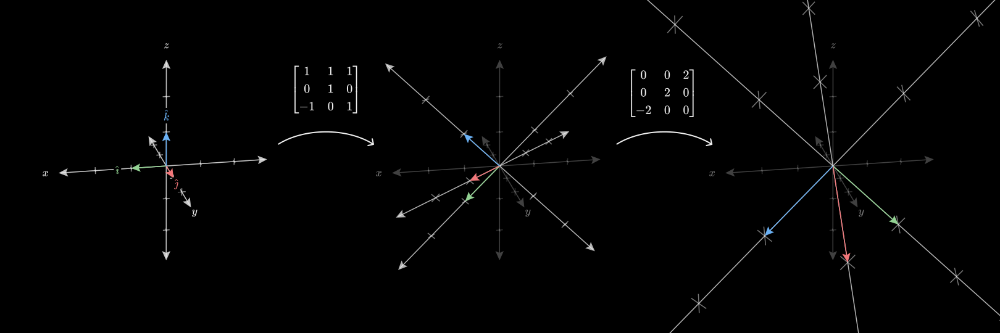

গত দুই অধ্যায়ে আমরা লিনিয়ার রূপান্তর ও ম্যাট্রিক্স নিয়ে কথা বলেছি, কিন্তু সেটি ছিল শুধু ২ডি ভেক্টর থেকে ২ডি ভেক্টরের বিশেষ ক্ষেত্র। এই সিরিজে আমরা মূলত দ্বিমাত্রিকতেই কাজ করব—কারণ স্ক্রিনে দেখা ও মনে ধারণা করা সহজ, এবং সবচেয়ে গুরুত্বপূর্ণ হলো দ্বিমাত্রিকে মূল ধারণাগুলো আয়ত্ত করলে সেগুলো উচ্চতর মাত্রায় প্রায় নির্বিঘ্নেই চলে যায়।
তবুও মাঝে মাঝে ফ্ল্যাটল্যান্ডের বাইরে মাথা তুলে দেখা ভালো—বাস্তব ত্রিমাত্রিক স্পেসে এই ধারণাগুলোর প্রয়োগ আসলে কী রূপ নেয়। যে নিয়ম আপনি সমতলে শিখেছেন, ঠিক সেই নিয়মই তিনটি অক্ষের জগতে কাজ করবে; শুধু একটি অক্ষ ও একটি বেসিস ভেক্টর বেশি যোগ হবে।
এই অধ্যায়ে আমরা ৩ডি স্পেসে প্রবেশ করব এবং দেখব কীভাবে তিনটি বেসিস ভেক্টরের গন্তব্য ট্র্যাক করে পুরো ত্রিমাত্রিক রূপান্তরকে নয়টি সংখ্যার একটি ৩×৩ ম্যাট্রিক্সে বাঁধা যায়।
ত্রিমাত্রিক জগতের তিনটি বেসিস ভেক্টর
দ্বিমাত্রিক স্থানে যেমন $x$ ও $y$ অক্ষ বরাবর $\hat{\imath}$ ও $\hat{\jmath}$ ছিল, ত্রিমাত্রিক স্থানে তেমনি তিনটি পরস্পর-লম্ব অক্ষ থাকে: $x$-অক্ষ বরাবর $\hat{\imath}$, $y$-অক্ষ বরাবর $\hat{\jmath}$ এবং $z$-অক্ষ বরাবর $\hat{k}$। প্রথম দুটি অক্ষ যেভাবে সমতল গড়ে তোলে, $z$-অক্ষ সেই সমতলে গভীরতা যোগ করে।
যেকোনো ৩ডি ভেক্টর $\vec{v}$ কে এই তিনটি বেসিস ভেক্টরের স্কেলিং ও রৈখিক সমাবেশ হিসেবে লেখা যায়। স্থানাঙ্ক $x, y, z$ আসলে তিনটি নির্দেশনা—প্রতিটি বেসিস ভেক্টরকে কতটা টেনে প্রসারিত বা সংকুচিত করে যোগ করতে হবে তা বলে দেয়।
ত্রিমাত্রিক রৈখিক রূপান্তরের জ্যামিতিক বৈশিষ্ট্য
টুডি জগতের মতোই একটি রূপান্তর তখনই রৈখিক যখন দুটি শর্ত পূরণ হয়—মূলবিন্দু $(0,0,0)$ নিজের জায়গায় অটল থাকে অর্থাৎ $L(\vec{0}) = \vec{0}$, এবং গ্রিডরেখা সোজা ও সমান্তরাল তলগুলো রূপান্তরের পরেও পরস্পরের সমান্তরাল ও সমদূরত্বে থাকে।
ত্রিমাত্রিক স্থানে কোটি কোটি ভেক্টরকে তীর হিসেবে কল্পনা করা অসম্ভব। তাই সবচেয়ে শক্তিশালী কৌশল হলো—পুরো স্পেসের পেছনে না ছুটে কেবল লক্ষ্য করা যে রূপান্তরের পর আমাদের তিনটি বেসিস ভেক্টর $\hat{\imath}$, $\hat{\jmath}$ ও $\hat{k}$ কোথায় গিয়ে পৌঁছাল।
রূপান্তরের পর আমাদের তিনটি বেসিস ভেক্টর মহাকাশের তিনটি নতুন অবস্থানে অবতরণ করে: $\hat{\imath}$ পৌঁছায় $L(\hat{\imath})$-এ, $\hat{\jmath}$ পৌঁছায় $L(\hat{\jmath})$-এ এবং $\hat{k}$ পৌঁছায় $L(\hat{k})$-এ। পেছনের আদি অক্ষগুলোর সাপেক্ষে এই নতুন ঠিকানাগুলোই আমাদের সব কিছু বলে দেয়।
এই তিনটি রূপান্তরিত ভেক্টরকে পাশাপাশি তিনটি উল্লম্ব কলাম আকারে সাজালেই পাওয়া যায় একটি ৩×৩ ম্যাট্রিক্স। এই নয়টি বাস্তব সংখ্যাই পুরো ত্রিমাত্রিক রূপান্তরের পূর্ণাঙ্গ ডিএনএ—কোথাও কোনো তথ্য বাদ যায় না।
ত্রিমাত্রিক ম্যাট্রিক্স-ভেক্টর গুণনের জ্যামিতিক তাৎপর্য
যেকোনো সাধারণ ভেক্টর $(x, y, z)$ এর ওপর এই রূপান্তর প্রয়োগ করলে কী হবে? এটি কোনো অন্ধ বীজগাণিতিক সূত্র নয়—এটি হলো রূপান্তরিত কলাম তিনটির একটি ভারযুক্ত বা ওয়েইটেড যোগফল, যেখানে ইনপুটের স্থানাঙ্কগুলো ওজন হিসেবে কাজ করে।
বাস্তব উদাহরণ: ওয়াই অক্ষকে কেন্দ্র করে ৯০° ঘূর্ণন
ধরা যাক পুরো স্পেসকে $y$-অক্ষ অনড় রেখে তার চারপাশে ৯০° ঘোরানো হলো। ফলে $\hat{\imath}$ ঋণাত্মক $z$-অক্ষে $\begin{bmatrix}0\\0\\-1\end{bmatrix}$ পৌঁছায়, $\hat{\jmath}$ অপরিবর্তিত থাকে $\begin{bmatrix}0\\1\\0\end{bmatrix}$, আর $\hat{k}$ ধনাত্মক $x$-অক্ষে $\begin{bmatrix}1\\0\\0\end{bmatrix}$ চলে আসে—এই তিনটিই তিনটি কলাম।
ত্রিমাত্রিক ম্যাট্রিক্স গুণন ও রূপান্তরের সংযোজন
দুটি ৩×৩ ম্যাট্রিক্স $A$ ও $B$ গুণ করার জ্যামিতিক অর্থ হলো—প্রথমে ডানের $B$ রূপান্তরটি স্পেসে ঘটে, এরপর তার ওপর বামের $A$ প্রযুক্ত হয়: $(AB)\vec{v} = A(B\vec{v})$। কম্পিউটার গ্রাফিক্স ও রোবোটিক্সে জটিল ৩ডি আবর্তনকে এভাবে আলাদা অক্ষের ঘূর্ণন ম্যাট্রিক্সের গুণ হিসেবে তৈরি করা হয়।
ত্রিমাত্রিক স্থানে রূপান্তরের ক্রম অত্যন্ত সংবেদনশীল—সাধারণত $AB \neq BA$। ফোনটিকে প্রথমে ডানে ৯০° এবং পরে উপরে ৯০° ঘোরালে যে অবস্থান পাবেন, প্রথমে উপরে ও পরে ডানে ঘোরালে সম্পূর্ণ ভিন্ন অবস্থান পাবেন। ২ডি-র মতো এখানে ক্রম বিনিময় করা চলে না।
অধ্যায়ের সমাপনী ধাঁধায় গ্রান্ট স্যান্ডারসন প্রশ্ন তুলেছেন—ভিন্ন মাত্রার মধ্যে কি লিনিয়ার রূপান্তর সম্ভব? উত্তর হলো হ্যাঁ; ২ডি থেকে ৩ডি রূপান্তর ঘটে ৩×২ ম্যাট্রিক্স দ্বারা, যা দ্বিমাত্রিক সমতলকে ৩ডি স্পেসের ভেতরে একটি চাদরের মতো স্থাপন করে।
উল্টোভাবে ৩ডি থেকে ২ডি রূপান্তর ঘটে ২×৩ ম্যাট্রিক্স দ্বারা—এটি ত্রিমাত্রিক বস্তুকে দ্বিমাত্রিক স্ক্রিনে ছায়া ফেলার মতো প্রজেকশন বা অভিক্ষেপ করে, যা আধুনিক ৩ডি কম্পিউটার গ্রাফিক্সের প্রধান ভিত্তি।
ত্রিমাত্রিক আয়তন স্কেলিং ও একক ঘনকের রূপান্তর
কল্পনা করুন মূলবিন্দুতে $\hat{\imath}$, $\hat{\jmath}$ ও $\hat{k}$ দ্বারা গঠিত $1\times1\times1$ একক ঘনক রয়েছে, যার আদি আয়তন ঠিক ১ ঘন একক। যেকোনো ৩×৩ রূপান্তর প্রয়োগ করলে পুরো স্পেসের সাথে এই ঘনকটিও টানটান হয়ে একটি তির্যক বাক্সে পরিণত হয়।
যেমন কোনো রূপান্তরে $\hat{\imath} \to 2\hat{\imath}$, $\hat{\jmath} \to 3\hat{\jmath}$ ও $\hat{k} \to \hat{k}$ হলে নতুন বাক্সের আয়তন হবে $2\times3\times1 = 6$ ঘন একক। আয়তনের এই পরিবর্তনই পরবর্তী অধ্যায়ের ডিটারমিন্যান্টের ভিত্তি গড়ে তোলে।
পরবর্তী লেসনে আমরা শিখব ডিটারমিন্যান্ট। ২ডি-তে যেমন এটি ক্ষেত্রফলের পরিবর্তনের হার মাপত, ৩ডি-তে এটি পরিমাপ করে যেকোনো রৈখিক রূপান্তরের ফলে কোনো বাক্সের আয়তন ঠিক কত গুণ প্রসারিত বা সংকুচিত হলো। টুডিতে চারটি সংখ্যা যেমন সমতল পরিচালনা করত, থ্রিডিতে তেমনি নয়টি সংখ্যা পুরো মহাকাশ নিয়ন্ত্রণ করে।
সারসংক্ষেপে মনে রাখুন: স্থানাঙ্ক আসলে কোনো পরম সত্য নয়—এটি একটি নির্দিষ্ট বেসিসের সাপেক্ষে পরিমাপের চুক্তি। লিনিয়ার অ্যালজেব্রার আসল শক্তি হলো জ্যামিতিক দৃষ্টি ও সংখ্যার তালিকার মধ্যকার অবলীলায় আদান-প্রদান; পরবর্তী অধ্যায়ে ডিটারমিন্যান্টের মাধ্যমে আমরা এই যাত্রা অব্যাহত রাখব।
ওয়াই-অক্ষের ঘূর্ণনের সাথে তুলনা করে জেড-অক্ষের ক্ষেত্রটি দেখা যাক। ঘড়িটি যেন $xy$-সমতলে শুয়ে থাকে এবং তার মুখ ধনাত্মক $z$-দিকে তাক করে—তখন ঘড়ির কাঁটার বিপরীতে ৯০° ঘোরালে $\hat{\imath} \to \begin{bmatrix}0\\1\\0\end{bmatrix}$, $\hat{\jmath} \to \begin{bmatrix}-1\\0\\0\end{bmatrix}$ এবং $\hat{k}$ অপরিবর্তিত থাকে $\begin{bmatrix}0\\0\\1\end{bmatrix}$।
দুটি ৩×৩ ম্যাট্রিক্স গুণন ২ডি-র মতোই: যখনই দুটি ম্যাট্রিক্স পাশাপাশি দেখুন, মনে করুন প্রথমে ডানের ম্যাট্রিক্সের রূপান্তরটি ঘটছে, তারপর বামেরটি। গুণফলটি এই দুটিকে একের পর অন্য প্রয়োগ করার সমতুল্য একটি নতুন রূপান্তর।
প্রশ্ন: দুটি ৩×৩ ম্যাট্রিক্সের গুণফলের নির্দিষ্ট রূপটি কেমন হবে, এবং ধারাবাহিক দুটি রূপান্তরের সাথে এর সম্পর্ক কী?
Reveal — উত্তর দেখুন
মনে করুন $M_1 = \begin{bmatrix} a & b & c \\ d & e & f \\ g & h & i \end{bmatrix}$ এবং $M_2 = \begin{bmatrix} j & k & l \\ m & n & o \\ p & q & r \end{bmatrix}$। $M_2$-র প্রথম কলাম $[j,m,p]^T$-কে $M_1$ দিয়ে রূপান্তর করলে গুণফলের প্রথম কলাম পাওয়া যায়। একই নিয়ম দ্বিতীয় ও তৃতীয় কলামের ক্ষেত্রে প্রযোজ্য।
অর্থাৎ $M_1M_2$-র $(r,s)$ উপাদান হলো $M_1$-র $r$-তম সারি ও $M_2$-র $s$-তম কলামের ডট-গুণফল। ডানের ম্যাট্রিক্স আগে প্রযুক্ত হয় বলে পড়ার ক্রম ডান থেকে বামে—এই দৃষ্টিভঙ্গিটি সূত্র মুখস্থ ছাড়াই গুণন তৈরি করতে সাহায্য করে।
অফিশিয়াল ধাঁধা: ২ডি স্পেস থেকে ৩ডি স্পেসে, অথবা ৩ডি থেকে ২ডি-তে লিনিয়ার রূপান্তর নিয়ে কথা বলা কি অর্থবহ? এরূপ রূপান্তর কীভাবে কল্পনা করবেন, কীভাবে ম্যাট্রিক্স দিয়ে প্রকাশ করবেন, প্রতিটির কতটি সারি ও কলাম থাকবে—এবং কখন এই ম্যাট্রিক্সগুলোর গুণন অর্থবহ হবে, কেন?
চিন্তা করুন একটি ভেক্টরের মাত্রা মানেই তার উপাদানের সংখ্যা, আর ম্যাট্রিক্সের কলাম সংখ্যা মানেই ইনপুট বেসিস ভেক্টরের সংখ্যা।
Reveal — উত্তর দেখুন
২ডি $\to$ ৩ডি রূপান্তরের ম্যাট্রিক্স আকার $3\times2$ (২ কলাম, ৩ সারি): দুটি ইনপুট বেসিস ভেক্টর রূপান্তরিত হয়ে ৩ডি-র তিনটি স্থানাঙ্ক লাভ করে। জ্যামিতিকভাবে এটি ২ডি সমতলটিকে ৩ডি স্পেসের ভেতরে একটি চাদরের মতো স্থাপন করে।
৩ডি $\to$ ২ডি রূপান্তরের ম্যাট্রিক্স আকার $2\times3$ (৩ কলাম, ২ সারি): তিনটি ইনপুট বেসিস ভেক্টর ২ডি সমতলে নামে আসে—এটি ৩ডি বস্তুকে স্ক্রিনে ছায়ার মতো প্রক্ষিপ্ত করে।
গুণন তখনই অর্থবহ যখন ডানের ম্যাট্রিক্সের সারি সংখ্যা বামের ম্যাট্রিক্সের কলাম সংখ্যার সমান—অর্থাৎ $(m\times n)(n\times p) = (m\times p)$। কারণ প্রথম রূপান্তরের আউটপুট মাত্রা $n$ অবশ্যই দ্বিতীয় রূপান্তরের ইনপুট মাত্রা $n$-এর সাথে মিলতে হবে; বা গাণিতিকভাবে $(MN)\vec{v} = M(N\vec{v})$।





নিচের ক্যানভাসে ড্র্যাগ করে ক্যামেরা ঘুরান, প্রিসেট বেছে বা স্লাইডার দিয়ে রূপান্তরের মাত্রা নিয়ন্ত্রণ করুন। সবুজ, লাল ও নীল তীর যথাক্রমে $\hat{\imath}$, $\hat{\jmath}$ ও $\hat{k}$-এর রূপান্তরিত কলাম—এদের নড়াচড়া থেকেই ম্যাট্রিক্সের ছয়টি উপাদানের পরিবর্তন পড়ুন।